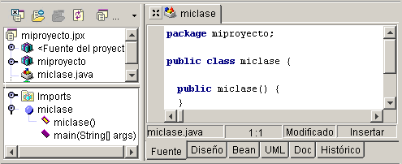

Todo el trabajo que se realiza en JBuilder debe hacerse dentro del contexto de un proyecto. Un proyecto de JBuilder es una herramienta de organización que incluye todos los archivos de la aplicación y su estructura de directorios, así como las vías de acceso, las opciones de configuración y los recursos necesarios. Cada proyecto se administra mediante un archivo de proyecto, que es un archivo descriptivo con la extensión .jpx.
Para crear un proyecto en JBuilder y añadirle un archivo de código fuente, siga estos pasos:
En el panel del proyecto aparece el archivo de proyecto junto con el archivo fuente, que ahora se encuentra integrado en él.

Si desea añadir un archivo vacío al proyecto, elija Archivo|Archivo nuevo, indique el nombre y el tipo del archivo y pulse Aceptar.
JBuilder admite los cambios de JDK. Pulse el archivo del proyecto con el botón derecho del ratón en el panel del proyecto, y seleccione Propiedades. Pulse el botón de puntos suspensivos del JDK en la ficha Vías de acceso, busque la versión del JDK deseada y pulse Aceptar.
JBuilder utiliza las bibliotecas con el fin de buscar los elementos que necesita para ejecutar un proyecto, así como examinar el código fuente, ver los comentarios Javadoc, utilizar el diseñador visual, aplicar CodeInsight y compilar el código. Las bibliotecas son recopilaciones de vías de acceso que incluyen archivos de clase, código fuente y documentación. Las bibliotecas son estáticas, no dinámicas. Las vías de acceso de las bibliotecas se suelen incluir en archivos JAR o ZIP, pero también pueden residir en directorios. La configuración de las bibliotecas se guarda en archivos .library.
El cuadro de diálogo Configurar bibliotecas (Herramientas|Configurar bibliotecas) permite reorganizar las bibliotecas y añadir otras. Además, la ficha Vías de acceso del cuadro de diálogo Propiedades de proyecto (Proyecto|Propiedades de proyecto) permite añadir bibliotecas necesarias al proyecto.
Si desea más información, consulte:
Generación de aplicaciones con JBuilder Creación y gestión de proyectos
Generación de aplicaciones con JBuilder Configuración del JDK
Generación de aplicaciones con JBuilder Las bibliotecas